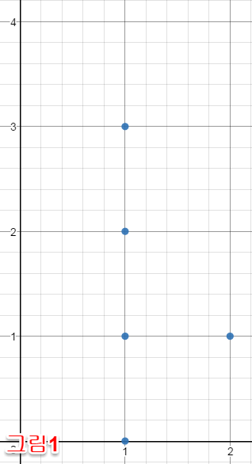
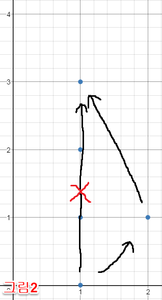

import java.util.HashSet;
import java.awt.Point;
public class BearBall
{
public int gcd(int a, int b) {
return b==0 ? a : gcd(b,a%b);
}
public int countThrows(int[] x, int[] y) {
int n = x.length;
int res = n*(n-1)*2;
for (int i=0; i < n; i++) {
HashSet<Point> set = new HashSet<Point>();
for (int j=0; j < n; j++) {
if(i==j) continue;
int dx = x[j] - x[i], dy = y[j] - y[i];
int g = gcd(Math.abs(dx),Math.abs(dy));
dx /= g; dy /= g;
set.add(new Point(dx,dy));
}
if(set.size()==1) {
res = 0;
for (int a=0; a < n; a++) {
for (int b=0; b < n; b++) {
if(a==b) continue;
res += Math.abs(a-b);
}
}
return res;
}
res -= set.size();
}
return res;
}
}
Explanation
이 문제의 핵심은 (전제 : 모든 점이 일직선 상에 있지 않으면) 시작점에서 끝점까지의 공의 이동 횟수는 2번이라는 점이다. (그림2) 에서 (1,0) 에서 (3,0)으로 가는 최단 경로는 일직선으로 가는 게 아닌 (2,1)을 거처 가는 경로이다. 모든 점이 일직선 상에 있는 경우에는 시작점에서 시작하여 모든 점들을 거쳐서 끝점으로 가야한다.
| 모든 점이 일직선 상에 있는 경우 | 그 외에 모든 경우 |
int res=0; for(int i=0; i < n; i++) { for(int j=0; j < n; j++) { if(i!=j) res += Math.abs(i-j) } } 위 코드를 공식화하면 (c++ long long int 형에서만 가능) n * (n+1) * (n-1) / 3 | 공을 2번 이동해서 시작점에서 끝점으로 가므로 모든 점에서 최대 나올 수 있는 공의 이동 횟수는 n * (n-1) * 2 시작점을 지정한 후 각 점을 끝점으로 지정하고 이동 횟수를 구한다. 일직선 상에 있는 점 구하는 방법은 다음과 같다. 최대공약수(Greatest Common Division, GCD)를 구한 후 각 x,y에 나눠준다. 모두 다 같은 x,y가 나오면 일직선 상에 시작 점과 해당 점이 있다는 뜻이다. 이 점을 set에 저장하면 set은 중복을 허용하지 않으므로 1개만 저장하게 된다. 일직선에 위치하지 않는 점은 set에 그대로 저장된다. 이 set의 size를 최대 공 이동 횟수에서 빼주고 더하면 된다. (빼는 방식이 아닌 더해나가는 방식을 사용해도 상관없다.) 최대 공 이동 횟수(res) -= set.size() |


References